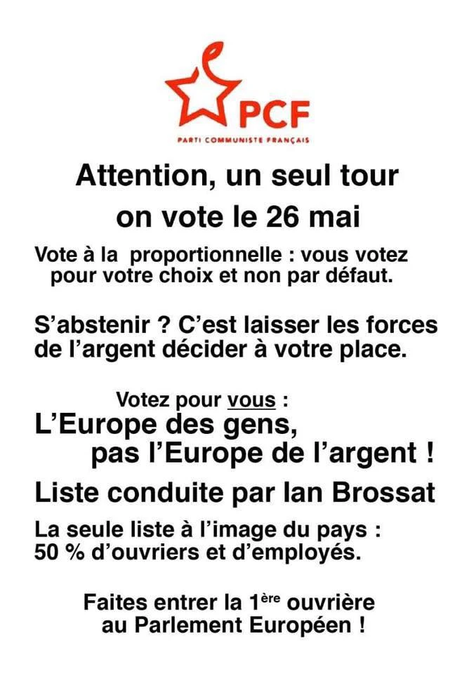

Tract de campagne archivé
« L’Europe des gens, pas l’Europe de l’argent ! » Le tract de la liste d’Ian Brossat
Date indiquée par Facebook · 1 mai 2019
Repères éditoriaux
Nous avons relayé ce tract du PCF pour le scrutin européen du 26 mai 2019. Il présente la liste conduite par Ian Brossat et met en avant la place des ouvriers et des employés parmi les candidatures.

Sources
Archive rouge · document diffusé sur Facebook · AR-0002-FB-02090